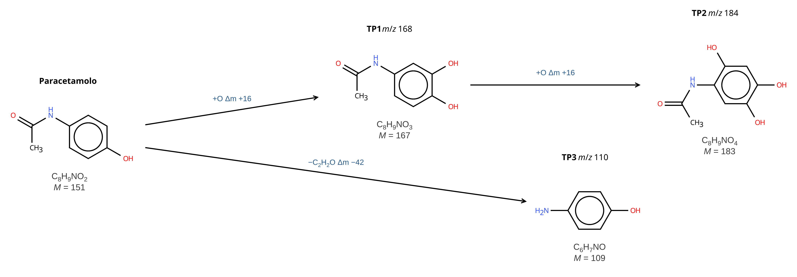
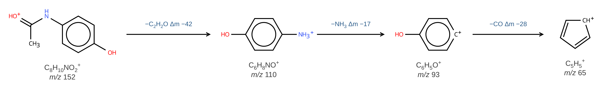

Disegnare le molecole
Come usare l'editor chimico della scheda Disegno (Ketcher) per molecole, ioni, frammenti e vie di trasformazione. Sotto ogni struttura compaiono da soli formula e massa e sopra ogni freccia la differenza di formula; gli schemi, gli ioni e i frammenti li disegnate voi.


Nello schema di trasformazione i prodotti sono molecole (neutre: quelle che si formano nel reattore) e la freccia è una reazione chimica; l'm/z scritto sopra un TP è quello dell'ione che si sceglie di osservare, di solito [M+H]+. Nello schema di frammentazione tutto avviene in fase gassosa dentro lo strumento: il precursore e ogni frammento sono ioni (a numero pari di elettroni), tutti con la carica, e la freccia è una dissociazione; sopra la freccia va la perdita neutra (−NH3, −H2O, −CO ...), che nello spettro non si vede. Nei due esempi gli m/z sono calcolati dal programma; la posizione degli OH nei TP è un'ipotesi plausibile, non l'unica possibile: a risoluzione unitaria l'm/z non la decide.
Comandi e consigli
Atomi
scegli l'elemento nella barra a destra (o il tasto: C, N, O, S, L = Cl, B = Br) e fai clic su un atomo per sostituirlo, o su un punto vuoto per aggiungerlo.
Carica + o −
strumenti A+ e A− nella barra a sinistra (tasti = e -), poi clic sull'atomo. Ogni clic aggiunge una carica. Per uno ione [M+H]+ metti la carica sull'atomo protonato (di solito N od O) e aggiungi l'H: la formula diventa quella dello ione e la scritta mostra m/z. Se invece disegni la molecola neutra e vuoi mostrare l'ione, scegli l'addotto nel menu Ione della barra a destra.
Aggiungere un atomo (es. +O)
per una struttura vera, scegli O e fai clic su un atomo della molecola (si crea il legame). Per una semplice scritta accanto a una freccia («+O», «−CH2», «+H2O») usa lo strumento testo T (Alt+T); nel riquadro del testo ci sono i pulsanti pedice e apice.
Parentesi
Ketcher non ha parentesi semplici per gli ioni (gli S-Group mettono parentesi da polimero, con una «n»). Per uno ione la cosa corretta è mettere la carica sull'atomo con A+: la scritta sotto diventa m/z. Se vuoi proprio la notazione [ ]+, scrivila con lo strumento testo T (pulsante apice per il +).
Vie di trasformazione
freccia di reazione e segno + nella barra a sinistra. Se disegni composto di partenza → freccia → prodotto, sopra la freccia compare da sola la differenza (es. «+O Δm +16»). Il nome o il numero di un composto («Paracetamolo», «TP1 m/z 168») lo scrivi tu con lo strumento testo T, sopra la struttura: l'm/z lo calcoli tu (è il lavoro da fare per la relazione). Con più prodotti metti le strutture una accanto all'altra o su righe diverse, con una freccia per ogni passaggio.
Un frammento senza rompere legami
seleziona solo gli atomi del pezzo (rettangolo di selezione, oppure clic sugli atomi tenendo premuto Maiusc) e premi Alt+C («Valori calcolati» di Ketcher): dà formula e massa della parte selezionata. Quale ione sia (H spostati, dove sta la carica) lo decidi tu.
Rompere un legame (frammenti)
strumento gomma (Del) e clic sul legame: la molecola si divide e sotto ogni pezzo compaiono formula e massa. Attenzione: un frammento in MS/MS è uno ione, quasi sempre con un H spostato; aggiungi carica e H dove servono e confronta l'm/z con lo spettro di ioni prodotto. Se sbagli: Ctrl+Z.
Altro
Ctrl+A seleziona tutto, Ctrl+L riordina il disegno, Ctrl+rotella ingrandisce.
Nel riquadro Disegna veloce incolli uno SMILES e la molecola compare sulla tela. Se invece selezioni una molecola, o anche solo un pezzo (rettangolo di selezione o Maiusc+clic), a destra compare il suo SMILES con il pulsante Copia; i legami tagliati sono chiusi con H. Sotto, le proprietà previste dalla struttura (se non selezioni nulla, di tutte le strutture della tela): logP, logS, superficie polare (TPSA) e numero di donatori/accettori di legame H. Servono per ragionare sulla ritenzione in fase inversa: a parità di condizioni, un composto più polare (logP più basso) esce prima su C18. Limiti e precisione delle stime (forma neutra, errore del logP, logD): nel «?» del riquadro. Il logP aiuta a confrontare candidati simili, non decide da solo quale sia un TP.
Le due spunte in cima alla barra a destra scelgono cosa scrivere sotto ogni struttura: la formula bruta, la massa monoisotopica (M per una specie neutra, m/z se c'è una carica) o tutte e due. Per la massa si sceglie il numero di decimali (0 = all'unità, come nello spettro a risoluzione unitaria). Il menu Ione mostra invece la molecola come ione ([M+H]+, [M+Na]+, [M−H]− ...): sotto compare la formula dello ione con la carica e, sotto ancora, l'm/z. Se la struttura ha già una carica disegnata, vale quella e il menu non cambia nulla. La scritta compare anche nelle immagini esportate.
PNG e JPEG sono salvati ad alta risoluzione (almeno 3 volte la dimensione a schermo, circa 3600 pixel di larghezza); l'SVG è vettoriale e si ingrandisce senza perdere qualità. Lo sfondo è bianco; con la spunta Sfondo trasparente PNG e SVG hanno lo sfondo trasparente (il JPEG non lo supporta e in quella modalità è disattivato). I file si chiamano disegno_data_ora (stesso nome per i quattro formati dello stesso minuto, _trasparente se lo sfondo è trasparente); il campo Nome file permette di sceglierne uno diverso.